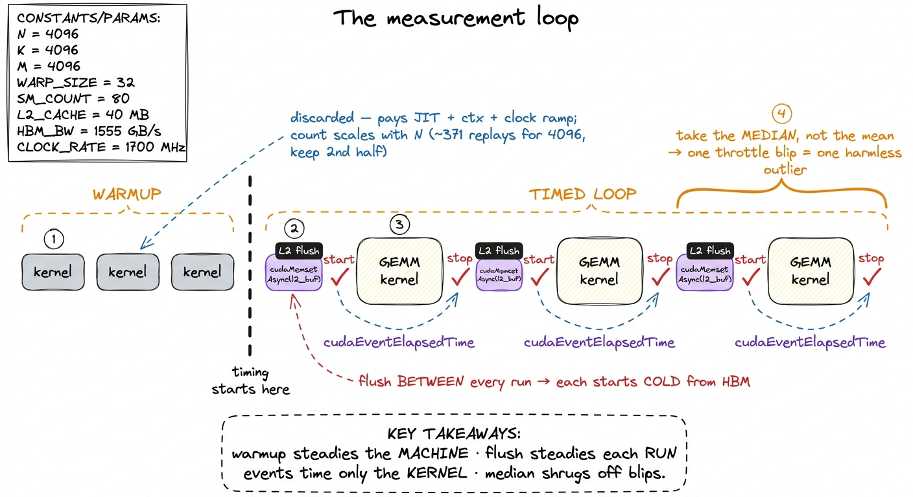
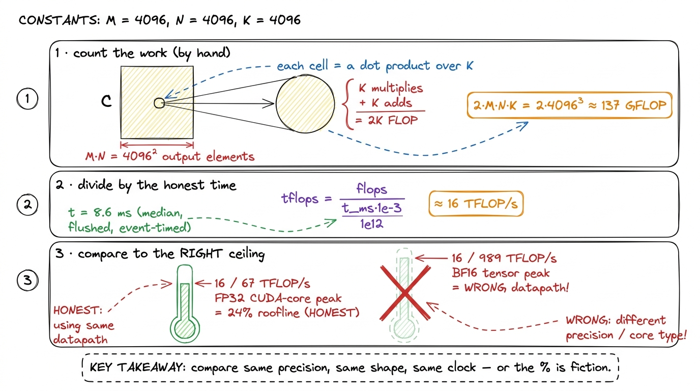
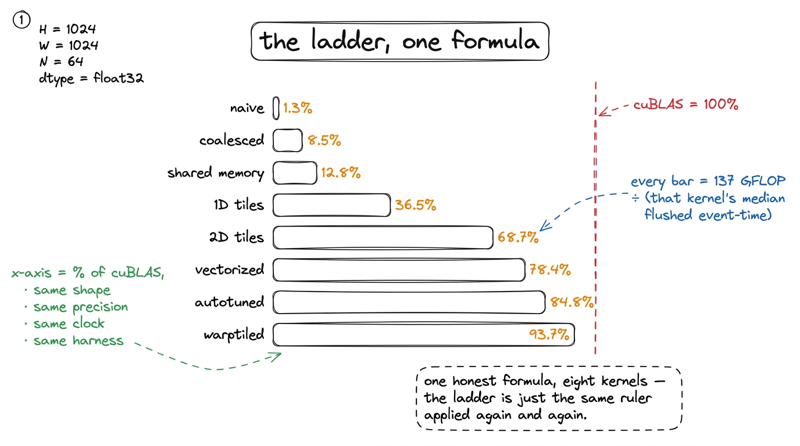
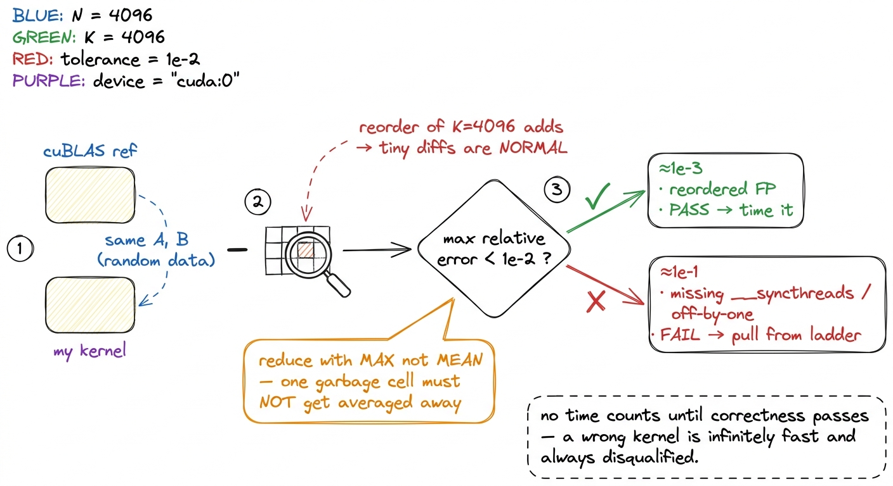

Benchmarking without lying to yourself
Before we optimize a single kernel, we have to answer a question that sounds too basic to bother with: how do you actually measure how fast a GPU program runs? It turns out this is the hard part. Not "hard" like the math of matrix multiplication is hard, but hard like weighing yourself on a scale that adds or subtracts ten pounds depending on the weather. If the scale lies, every diet you try afterward is a story you tell yourself.
Every number on this site is a claim about reality. The humiliating 1.3% of cuBLAS the naive kernel earns, the 93.7% the warptiled one earns ten steps later — those are the two ends of a ladder, and the whole ladder is only as trustworthy as the ruler I measure it with. So before I write the first kernel, I want to build the ruler. This article is that ruler: the boring, load-bearing discipline that makes the fun part honest.
Here is the uncomfortable truth I want you to sit with. A GPU is an almost adversarially easy machine to fool yourself with. It boosts its own clock speed when it feels like it. It quietly caches the very data you meant to read fresh from memory. It hides the cost of starting your program behind asynchronous queues so your stopwatch measures the wrong thing entirely. Get the harness wrong and you will spend a weekend "optimizing" a kernel whose speedup was really just a warmer cache or a lucky clock bin. You will feel like a genius and you will have measured nothing.
So the question this article answers is precise: given one GEMM kernel, how do I get a single throughput number I would defend to a skeptic? And then: how do I turn that number into "% of cuBLAS" without cheating?
Let me build up to it from zero.
What is even being measured?
Start with the thing on the table. GEMM stands for general matrix–matrix multiply: the operation C = A · B where A is M×K, B is K×N, and the result C is M×N. It is the single most important computation in modern AI — every transformer layer, every attention block, every feed-forward network is a stack of these. When people say "the GPU is doing a matmul," this is the matmul. If you want the wider map of why it is fast or slow on different shapes, the three regimes lays that out; here I only need the one square case.
Throughout this article I will use one concrete example and never let go of it: a square problem with N = 4096, so M = N = K = 4096, all FP32 (32-bit floats). I picked square because the arithmetic stays clean and you can check every number by hand. Keep that one picture in your head — two 4096×4096 matrices going in, one coming out — because every hazard and every fix below will be explained against exactly this example.
 figure rendering · The mental model for the whole article. On the left, the honest quanti
figure rendering · The mental model for the whole article. On the left, the honest quantiThat figure is the mental model I will reuse for the rest of the article: four gremlins, and our whole job is to silence them one at a time. Let me introduce each gremlin properly, because you cannot kill a bug you do not understand.
Why "one measurement" is so hard: the four gremlins
The naive plan is the obvious one. Record a timestamp on the CPU. Launch the kernel. Record another timestamp. Subtract. Report the difference.
This is wrong in at least four independent ways, and — this is the part that gets people — each way moves the number by tens of percent, not by a rounding error. Let me take them in turn and reason out why each one happens, because the fixes only make sense once you feel the mechanism.
Gremlin 1 — the clocks are not what you think
You probably imagine a GPU runs at a fixed speed, like an old CPU rated at "3.0 GHz." It does not. An H100 SXM5 — the datacenter GPU this ladder targets — has a base clock and a much higher boost clock, and it slides between them continuously based on temperature and power draw. When the chip is cool and lightly loaded, it boosts up (toward ~1.98 GHz on the SM). When it has been grinding for a while and heats up or hits its power cap, it throttles back down.
Here is the killer consequence. The first launch of your kernel and the two-hundredth launch of the exact same kernel can differ by 20–30% in runtime, purely from clock drift — same code, same data, same everything. If kernel 3 in my ladder happened to run cool and boosted, and kernel 4 ran hot and throttled, the "speedup" I measure between them is partly a temperature story. I would be crediting my code for what was really the weather inside the box.
This is why locked clocks are non-negotiable for a ladder, where the entire point is to attribute each delta to a specific code change.
Gremlin 2 — the GPU is asynchronous
This one surprises almost everyone the first time. When you write sgemm<<<grid, block>>>(...) in CUDA, the CPU does not wait for the kernel to finish. It does not even wait for it to start. The launch call returns to the CPU almost immediately — all it did was drop a work item into a queue (a stream) that the GPU drains on its own schedule.
So think about what a CPU-side stopwatch actually times. You record t0, you enqueue the kernel, you record t1. The gap between t0 and t1 is the time it took to enqueue the launch — a few microseconds of driver bookkeeping — and has almost nothing to do with how long the kernel runs on the device. You would be timing the act of mailing a letter, not the journey the letter takes. For a big GEMM that runs for milliseconds, a CPU timer might report microseconds. The fix is to stop asking the CPU and time inside the GPU's own stream.
Gremlin 3 — the L2 cache lies to you
To feel this one, you need a one-paragraph tour of where bytes live on a GPU. Data sits in a hierarchy: tiny, blazing-fast registers private to each thread; a slab of on-chip shared memory / L1 per SM; a big chip-wide L2 cache; and finally the huge, slow HBM3 main memory. The whole game of a fast kernel is keeping data high in that pyramid. But for benchmarking, the L2 is a trap.
 figure rendering · The memory hierarchy the benchmark has to respect. Without a flush, re
figure rendering · The memory hierarchy the benchmark has to respect. Without a flush, reNow the arithmetic, done out loud on our example. One 4096² FP32 matrix is 4096 × 4096 × 4 bytes = 64 MiB. Two inputs, A and B, are 128 MiB. The H100's L2 cache is about 50 MiB.1 Physically the H100 L2 is two partitions joined by a crossbar, with a 128 B line split into 4×32 B sectors. The ~50 MiB is shared across the whole chip, so whether your working set "fits" also depends on how many other CTAs happen to be live at the same instant — one more reason to flush deterministically rather than try to reason about residency. So on the first run, 128 MiB of inputs cannot fit in a 50 MiB cache; most of it spills, and the kernel genuinely reads from HBM — exactly what you want to measure.
But run that same kernel a hundred times back-to-back and something sneaky happens. A meaningful slice of B never leaves the L2 between runs. By run 100 you are partly reading from a warm on-chip cache at multiples of HBM's bandwidth. Your memory-bound kernel now looks faster than it will ever be on the first, cold call a real production workload issues. The benchmark quietly rewards the kernel for a cache-residency effect that vanishes in reality.
Gremlin 4 — cold start
The mirror image of gremlin 3. The very first launch of a kernel pays for one-time costs a real run in a hot loop never pays again: creating the CUDA context, JIT-compiling any PTX intermediate code down to the actual machine instructions, and cold instruction-cache misses. Time that first launch and you are benchmarking the driver, not the kernel. The number is too slow, and misleadingly so.
Notice that gremlins 3 and 4 pull in opposite directions — one makes late runs too fast, one makes the first run too slow — which is exactly why the fixes for them interact and why I spend the most time on them below.
 figure rendering · The four gremlins, each wired to the one measurement they corrupt. A d
figure rendering · The four gremlins, each wired to the one measurement they corrupt. A dFour gremlins, four fixes. The rest of the article is those fixes, in the order I apply them in the harness. Watch how each one maps back to exactly one gremlin from the picture above.
Fix 1 — lock the clocks (kills gremlin 1)
Boost is the enemy of reproducibility, so I take it off the table. Before measuring anything, I pin the GPU to a fixed frequency and put it in persistence mode so the driver state does not tear down and rebuild between runs:
sudo nvidia-smi --persistence-mode=1
sudo nvidia-smi --lock-gpu-clocks=1980 # pick a sustainable SM clock
sudo nvidia-smi --lock-memory-clocks=2619 # from -q -d SUPPORTED_CLOCKSHere is the thing to internalize: the exact frequency I pick matters far less than the fact that it is identical across every kernel in the ladder. If kernel 3 boosted to 1.98 GHz and kernel 4 throttled to 1.5 GHz, part of the delta between them is a frequency story, and I would be attributing a clock difference to my code. Lock it once, and every kernel is judged on the same track at the same speed.2 Lock to a clock the card can hold under sustained tensor load, not the max boost bin — otherwise it throttles mid-run and you are back to a moving target. I also log clocks_throttle_reasons.active; if it ever reports anything but Idle/GpuIdle during a measurement window, I throw the run out. The salykova harness does the same on an RTX 3090, locking to its base 1395 MHz core and 9501 MHz memory and confirming the throttle mask reads 0x0 before trusting a run.
There is a philosophical caveat worth saying out loud, because it is a real limitation and not a footnote. Locked clocks measure architectural efficiency — how good is my code, holding the hardware still. They do not measure what a user gets in a hot datacenter where the card boosts and throttles freely under a real serving load. Both are legitimate questions! For a kernel ladder, where I need to attribute every delta to one code change, locked clocks are the only honest choice. For a "what will production actually feel like" number, you want an unlocked run too. I report the locked number and label it as locked, so nobody confuses the two.
Fix 2 — time on the GPU with events (kills gremlin 2)
Since the CPU genuinely cannot see when a kernel finishes, I stop asking it. CUDA events are timestamps recorded into the GPU's own stream. The device fills them in as it reaches them, in order, and I read the delta afterward. Think of it as handing the GPU two stamped tickets and telling it to punch the first one right before the kernel and the second one right after — the punches happen on the device's clock, not the CPU's.
cudaEvent_t start, stop;
cudaEventCreate(&start);
cudaEventCreate(&stop);
cudaEventRecord(start); // enqueued into the stream
sgemm<<<grid, block>>>(N, A, B, C);
cudaEventRecord(stop); // enqueued after the kernel
cudaEventSynchronize(stop); // block CPU until 'stop' is actually reached
float ms = 0.0f;
cudaEventElapsedTime(&ms, start, stop);The magic is ordering. start and stop are enqueued inside the same stream as the kernel, so the GPU necessarily reaches start, then runs the kernel, then reaches stop. The interval between the two punches brackets exactly the kernel's execution on the device — no launch latency, no CPU scheduling jitter. cudaEventElapsedTime has roughly 0.5 µs resolution, which is far below a 4096³ GEMM's millisecond-scale runtime, though it becomes a real error source if you ever try to time a sub-microsecond kernel.3 The single cudaEventSynchronize(stop) is the only place I let the CPU block. I never sprinkle cudaDeviceSynchronize() between launches inside the timing loop — that serializes the stream and injects overhead I did not mean to measure. One sync, at the end, after the stop event.
That is gremlin 2 gone. The CPU now only waits once, at the very end, just long enough to read a number the GPU already filled in.
Fix 3 — warm up, then flush the L2 (kills gremlins 4 and 3)
This is the crux of the whole article, because the fixes for the last two gremlins fight each other, and getting the interaction right is what separates a real harness from a toy.
The warmup, and why it scales with problem size
Warmup kills gremlin 4 (cold start). I launch the kernel a handful of times before the timing loop begins and throw those results away. By the time the clock starts, context creation, PTX JIT, and instruction-cache population are all already paid for — and, bonus, the clocks have ramped to steady state.
A fixed warmup count is crude, though. A tiny problem finishes so fast that ten launches barely warm the chip; a huge problem is warm after two. The salykova harness handles this gracefully: it runs 1000 · exp((1024 − N) / 3100) total replays and then averages only the second half.4 For N = 4096 that formula gives about 371 replays, and it measures the last ~185 of them. The exact constants are not the point — the point is that the replay count scales with problem size so that even a fast, small kernel runs long enough for clocks and caches to reach steady state before any run is allowed to count. Averaging only the second half is itself a warmup: the first half is discarded on principle. Small problems get more repeats; large ones get fewer; everything reaches steady state before a single run counts.
The flush, and why warmup makes it necessary
But warmup reintroduces gremlin 3. If I run the same kernel 185 times back-to-back to average it, the L2 stays warm across all of them, and my "HBM read" is partly an L2 read. The kernel looks faster than it will ever be on the first, cold call a real workload issues. Warmup and honest-memory pull against each other.
The resolution: between every single timed iteration, evict the L2 by writing a scratch buffer at least as large as the cache. Reading or writing ~50 MiB of unrelated data pushes every useful line out, so the next timed run starts from the same cold state as run one.
// allocate once, sized to the full L2 (query cudaDeviceProp::l2CacheSize)
cudaMemsetAsync(l2_flush_buf, 0, l2_bytes, stream);This is the single most-skipped step in amateur GEMM benchmarks, and it is the one that most often produces a too-good-to-be-true number. Here is a tell you can use: Nsight Compute flushes caches before each replay by default. That is precisely why an ncu measurement and a naive loop-timer measurement of the same kernel often disagree — and when they do, ncu is usually the honest one, because the loop-timer let gremlin 3 back in.
Say the two ideas out loud so they stop blurring together: warmup makes the machine steady; the flush makes each iteration start from the same cold-memory state. They are different jobs. You need both. Warmup without a flush gives you a steady machine reading a warm cache — fast and fake. A flush without warmup gives you cold memory on an unsteady, still-ramping clock — cold and jittery. Only both together give you cold memory on a steady machine, which is the number I trust.

figure rendering · The full loop composed. Warm up once so the chip is at steady state, tMedian, not mean
One last small decision with a big payoff. Across the timed runs I take the median, not the mean. A single throttle blip, or a background process briefly preempting the GPU, shows up as one fat outlier. The mean drags toward that outlier; the median just steps over it. It is the cheapest robustness you will ever buy.
That completes the harness on the timing side. Now the second half of the honesty problem: turning a time into a performance number without smuggling in a lie.
Turning milliseconds into TFLOP/s — without lying in the conversion
A time is not a performance number; 8.6 ms means nothing until you know how much work happened in it. So let me count the work exactly, from the definition, on our N = 4096 example.
A GEMM C = A·B for M×K times K×N does exactly 2·M·N·K floating-point operations. Here is the derivation you can do on a napkin: the output C has M·N elements. Each output element is a dot product over the shared dimension K — that is K multiplies and K adds, so 2K FLOPs per element. Multiply: (M·N) · (2K) = 2·M·N·K. The factor of 2 is just "one multiply plus one add per term."5 Pedantically there is also a + M·N term for writing the accumulator out (and cuBLAS's C = αAB + βC adds a scale/add per output element). At 1/K of the total that is a 0.02% correction at N = 4096 — well below the measurement's own noise floor — so everyone drops it. siboehm writes it as 2·M·N·K + M·N and then ignores the second term for exactly this reason.
flops = 2 * M * N * K
tflops = flops / (time_ms * 1e-3) / 1e12Plug in our example. 2 · 4096³ ≈ 1.37 × 10¹¹ FLOPs — about 137 GFLOP of work in a single 4096² GEMM. If an FP32 2D-tiled kernel takes about 8.6 ms, then 1.37e11 / (8.6e-3) ≈ 1.6e13, which is roughly 16 TFLOP/s. That is our first honest performance number, and I want to immediately ask the natural question: 16 out of what?

figure rendering · The conversion, zoomed in. Count the FLOPs from the definition, divideThe honest reference for that number is the H100's realistic FP32 CUDA-core peak of ~67 TFLOP/s. Against that, 16 TFLOP/s is about 24% of the roofline. And against cuBLAS's own FP32 SGEMM on the identical shape, run through the identical harness, that same kernel lands at 68.7% of cuBLAS. Those two framings — "% of hardware peak" and "% of cuBLAS" — answer slightly different questions, and I report both.
There are exactly two ways this conversion quietly lies, and both are common enough that I check for them every time:
- Comparing against a marketing peak instead of a realistic one. The sparsity-doubled or max-boost-clock number on a spec sheet is not a number your dense FP32 kernel can ever approach. Divide by it and your "% of peak" looks artificially bad. Worse is the cross-datapath sin: this FP32 CUDA-core kernel must not be compared against the H100's
~989 TFLOP/sBF16 tensor-core peak.6 That would make the kernel look about 15× worse than it is, because BF16 tensor cores are a completely different hardware datapath from the FP32 CUDA cores this kernel uses. Every "% of cuBLAS" on this site is same-precision, same-shape, same-clock. The moment you cross precisions or datapaths, the comparison is meaningless. (siboehm's RTX A6000 numbers, for reference, are all FP32 against that card's ~38.7 TFLOP/s FP32 peak, not its 309 TFLOP/s tensor peak — same discipline.) - Comparing against a
cuBLAScall configured differently from your kernel — a different data layout, a differentK, or a warm-vs-cold L2. If cuBLAS gets a warm cache and your kernel gets a flush, cuBLAS "wins" for free. So I benchmark cuBLAS through the exact same harness: same flush, same events, same shape, same clock. Only then is "% of cuBLAS" a fair fight.
The whole ladder is just this one arithmetic applied to progressively faster times. As the kernels improve, the same 137 GFLOP of work gets done in less time, so the same formula reports a bigger number:

figure rendering · The entire optimization ladder is a single formula applied to progressCoalescing at 8.5%, shared memory at 12.8%, 1D tiles at 36.5%, vectorized at 78.4%, autotuned at 84.8% — all the same ruler, applied again and again, which is the entire reason the ruler had to be built and trusted before the first kernel.
Fix 4 — a kernel that is wrong is infinitely slow
There is one more gremlin I have not put on the scale, because it is not a timing gremlin — it is worse. A wrong kernel can be arbitrarily fast. Delete the inner loop and your kernel "runs" in nanoseconds and produces garbage. Speed of a wrong answer is not a metric; it is a bug with good PR. So before any kernel's time is allowed onto the ladder, it must pass a correctness check against a trusted reference — cuBLAS, or a plain CPU triple-loop for small N.
But "correct" needs care, because floating-point addition is not associative. Summing K = 4096 products in a different order — which every tiled kernel does, because it accumulates partial sums in a different sequence than a naive loop — gives a slightly different result even when the algorithm is perfectly right. So I never test for bit-exact equality. Instead I test that the largest relative error stays under a tolerance:
ref = cublas_gemm(A, B) # trusted reference
out = my_kernel(A, B)
err = (out - ref).abs().max() / ref.abs().max()
assert err < 1e-2, f"kernel wrong: rel err {err:.2e}"For FP32 accumulation over K = 4096, a relative error around 1e-3 is normal and completely fine — that is just reordered rounding. Anything near 1e-1, on the other hand, means a real indexing or synchronization bug, almost always a missing __syncthreads() or an off-by-one in the tiling.7 The classic false pass is a race: most output elements are correct and a handful are garbage from an unsynchronized read. A max relative error catches it instantly, because the one bad element dominates. A mean error would average that garbage away and wave a broken kernel onto your leaderboard. For a correctness gate, always reduce with max, never mean. (siboehm and salykova both validate against cuBLAS on random data across multiple sizes for the same reason — reordered FP means you test tolerances, not equality.)

figure rendering · The correctness gate that runs before any timing. Because floating-poiThe gate runs on every kernel, every time. A kernel that regresses in correctness is pulled from the ladder no matter how gorgeous its clock — because a number attached to a wrong answer poisons every comparison that follows it.
The discipline, in one paragraph
Let me compress the whole harness into a single breath, because if you remember one paragraph from this article, make it this one.
A trustworthy GEMM number is: clocks locked and persistence on (gremlin 1 dead); a warmup phase discarded so the machine is at steady state (gremlin 4 dead); the L2 flushed before every single timed run so each starts cold (gremlin 3 dead); timing done with CUDA events inside the stream, never a CPU timer (gremlin 2 dead); the median of enough iterations taken to shrug off outliers; converted to TFLOP/s via 2·M·N·K / time; compared against a same-precision, same-shape peak and a cuBLAS baseline run through the identical harness; and — before any of that counts — checked for max relative error under 1e-2 against a reference. Skip any one of these and the ladder becomes a story you tell yourself. Do all of them and every "% of cuBLAS" on this site means exactly what it says.
This same discipline is not academic trivia — it is exactly what the teams shipping real inference do. When vLLM claims a throughput win, when a FlashAttention release quotes a speedup, when DeepSeek reports its FP8 GEMM efficiency, there is a harness underneath doing this: locking clocks, flushing caches, timing on-device, and gating on correctness. The numbers are only marketing if the ruler is honest; this is how you make the ruler honest.
With the ruler built and trusted, we can finally start climbing. The naive kernel goes first — one thread per output element, no cleverness at all — and the harness we just built will tell us, without flattery, that it reaches a mere 1.3% of cuBLAS. That honest, humiliating number is the whole point: it is the first true rung on a ladder we can now believe.